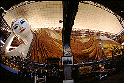
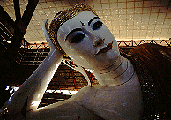
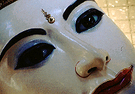
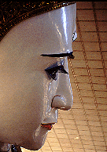
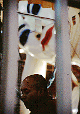
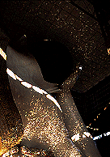
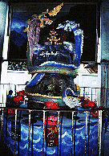
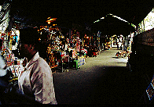

チャウッタヂーパゴダ/ヤンゴン
ChaukhtatkyiPagoda/YANGON
有名なバゴーの寝釈迦よりもちと大きいのが御自慢の大寝釈迦像。屋内に寝そべるその姿はリラックスムード満点。1996年に改装したばかり。
ミャンマーの人は寝釈迦像を見た時に最初に確認するのがその方向。
頭をどちらに向けているかでその意味合いが違うと言う。
東・・・天の神に仏法を解いている。
西・・・休憩している。
南・・・人間、動物に仏法を説いている。
北・・・入滅
あ、北枕とかってここから来てるのね。
ちなみにここの寝釈迦は南向き。西日に乱反射する鏡モザイクの光が印象的だった。

こんな感じである。でかい。

仏法を説いている様には見えないリラックス具合。

今にも動きだしそうなリアルさ。睫毛、長いッス。

この日は1週間ぶっ続けでお経をあげるという儀式の最中。お坊さん、かなりしんどそうです。

西日を背中に受け台座の鏡モザイクの光が乱反射する、の図。

ここにもあった回転賽銭装置
。

門前の土産屋。ヒマそう。
バゴーへGO!
ミャンマーパゴダ列伝のページへ
珍寺大道場
HOME